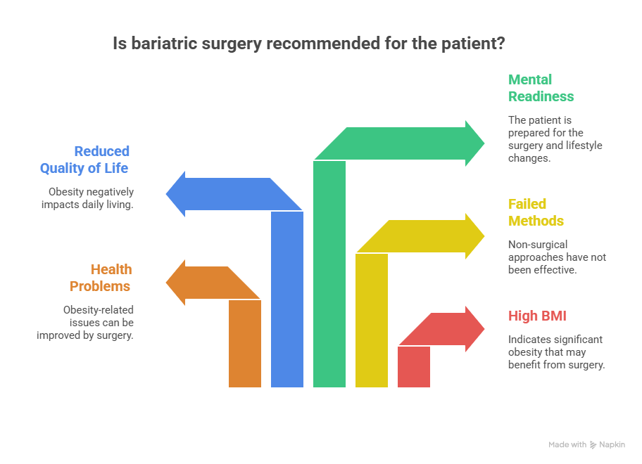
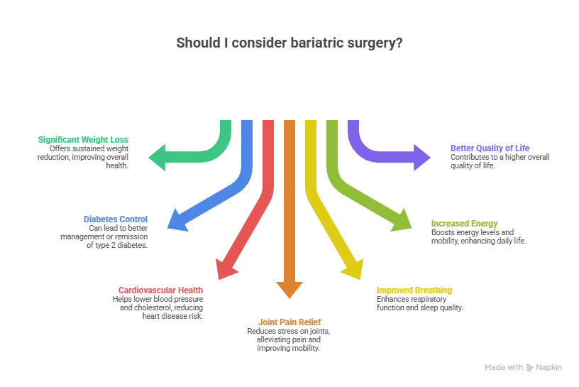

Obesity is a chronic and progressive medical condition that increases the risk of several serious health problems, including type 2 diabetes, heart disease, high blood pressure, joint disorders, and sleep-related breathing issues. For many individuals, excess weight persists despite repeated efforts with diet control, exercise programs, and medical management. When obesity begins to interfere with overall health, daily activities, and long-term well-being, surgical intervention may be considered as part of a comprehensive treatment approach.
Understanding when is bariatric surgery recommended is essential for patients who are exploring long-term weight management options. Bariatric surgery is not advised as a first-line treatment but is recommended only after thorough medical evaluation and failure of non-surgical methods. With the availability of advanced surgical techniques and experienced specialists, Bariatric Surgery in Delhi has emerged as a reliable option for eligible patients seeking sustainable weight loss and significant improvement in obesity-related medical conditions.
When is Bariatric Surgery Recommended?
Understanding when is bariatric surgery recommended is essential for patients who are exploring long-term weight management options.
Book Your Appointment TodayUnderstanding Bariatric Surgery
Bariatric surgery refers to medical procedures that help individuals lose weight by modifying the way the stomach and digestive system function. These surgeries are designed to:
- Reduce the amount of food the stomach can hold
- Help patients feel full faster
- Reduce hunger by affecting appetite-related hormones
- Improve metabolism and obesity-related health conditions
The main purpose of bariatric surgery is long-term weight loss and improvement in overall health, not quick or cosmetic results.
When is Bariatric Surgery Recommended?

Doctors recommend bariatric surgery only after careful medical evaluation. It is usually advised in the following situations:
1. High Body Mass Index (BMI)
BMI is an important measure to determine obesity levels. Bariatric surgery is commonly recommended when:
- BMI is 40 or higher, even without other medical problems
- BMI is 35 or higher with serious obesity-related conditions, such as:
- Type 2 diabetes
- High blood pressure
- Sleep apnea
- Heart disease
- Joint or spine problems
- Type 2 diabetes
In selected cases, surgery may also be considered for people with a BMI between 30 and 35 if diabetes or metabolic conditions are difficult to control.
2. Obesity-Related Health Problems
One of the strongest reasons when bariatric surgery is recommended is when excess weight causes or worsens serious medical conditions, including:
- Poorly controlled diabetes
- High cholesterol
- Fatty liver disease
- Breathing difficulties
- Hormonal imbalance
- Fertility issues
- Chronic joint pain
When these problems continue despite treatment, surgery may be advised to prevent long-term complications.
3. Failure of Non-Surgical Weight Loss Methods
A very common question is: Do bariatric doctors always suggest surgery? The answer is no.
Doctors recommend surgery only if:
- Multiple diet plans have been tried but failed
- Exercise programs were followed consistently
- Medical weight-loss treatments failed
- Weight loss was temporary, and the weight was regained
Bariatric surgery is considered only after non-surgical options do not provide desirable results.
4. Reduced Quality of Life Due to Obesity
Bariatric surgery may be recommended when obesity affects daily life, such as:
- Difficulty walking or climbing stairs
- Constant fatigue
- Poor sleep quality
- Low confidence and social withdrawal
- Reduced ability to work or travel comfortably
If weight loss can significantly improve physical comfort and mental well-being, surgery may be advised.
5. Mental and Emotional Readiness
Bariatric surgery is a lifelong commitment. Doctors recommend it only if a person is ready to:
- Follow long-term dietary changes
- Eat smaller portions permanently
- Take vitamin and mineral supplements
- Attend regular follow-ups
- Maintain an active lifestyle
Without this readiness, surgery may be delayed.
Types of Bariatric Surgery Doctors May Recommend
The type of bariatric surgery depends on BMI, health conditions, and individual needs. Commonly recommended procedures include:
1. Sleeve Gastrectomy
Sleeve gastrectomy is one of the most widely performed bariatric procedures. In this surgery, a large portion of the stomach is removed, leaving behind a narrow, tube-shaped stomach. This significantly reduces the amount of food a person can eat and also lowers the production of hunger-related hormones. As a result, patients feel full sooner and experience reduced appetite.
2. Gastric Bypass Surgery
Gastric bypass surgery is considered one of the most effective bariatric procedures, particularly for individuals with severe obesity or obesity-related metabolic conditions. The surgery involves creating a small stomach pouch and bypassing a certain section of connecting it directly to a portion of the small intestine.
3. Mini Gastric Bypass
Mini gastric bypass is a modified and less complex version of traditional gastric bypass surgery. It involves creating a smaller stomach pouch and attaching it to a loop of the small intestine, reducing both food intake and calorie absorption. This procedure typically takes less time to perform and may have a shorter recovery period.
The final decision is made after a detailed medical discussion between the patient and surgeon.
Benefits of Bariatric Surgery When Recommended
When bariatric surgery is recommended at the right time and for the right patient, it can offer several benefits:
- Significant and sustained weight loss
- Better control or remission of type 2 diabetes
- Lower blood pressure and cholesterol
- Reduced joint pain
- Improved breathing and sleep
- Increased energy and mobility
- Better quality of life
Because of these benefits, Bariatric Surgery in Delhi has become a reliable option for patients meeting proper medical criteria.
Who Should Not Undergo Bariatric Surgery?

Bariatric surgery may not be suitable for everyone. It is usually not recommended if:
- BMI does not meet medical guidelines
- Obesity can be managed through lifestyle changes
- The patient is unwilling to follow post-surgery rules
- There are untreated mental health conditions
- There is ongoing alcohol or substance abuse
In such cases, doctors may suggest alternative treatments.
Life After Bariatric Surgery
Even when surgery is recommended and successfully performed, long-term results depend on patient commitment.
Life after surgery includes:
- Eating healthy, balanced meals
- Avoiding high-sugar and junk foods
- Regular physical activity
- Lifelong vitamin supplementation
- Routine medical follow-ups
When is Bariatric Surgery Recommended?
Understanding when is bariatric surgery recommended is essential for patients who are exploring long-term weight management options.
Book Your Appointment TodayConclusion
Understanding when is bariatric surgery recommended is essential for making informed decisions about long-term weight management and overall health. Bariatric surgery is not advised for everyone and is recommended only after careful medical evaluation, failure of non-surgical weight-loss methods, and assessment of obesity-related health risks.
When chosen for the right patient and performed at the right time, bariatric surgery can lead to significant and sustained improvements in weight, metabolic health, and quality of life. Consulting an experienced specialist such as Dr. Atul Peters ensures that patients receive ethical guidance, personalized treatment planning, and comprehensive long-term care focused on safety and lasting results.
Frequently Asked Questions
When is Bariatric Surgery recommended?
Do Bariatric Doctors always suggest surgery?
Is Bariatric Surgery safe?
How much weight can be lost after Bariatric Surgery?
Is Bariatric Surgery permanent?
How long does recovery take?
Can Weight regain happen after surgery?
Recommended Further Reading
Have Personal Health Questions?
Consult with Dr. Atul Peters and our expert multidisciplinary team at Max Smart Super Speciality Hospital, Saket, New Delhi.
Book Your Consultation